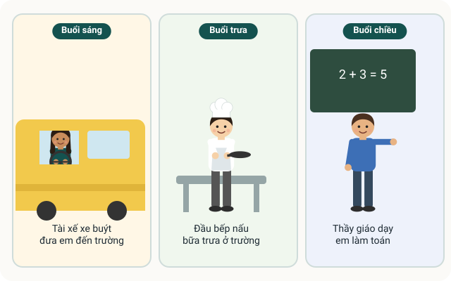
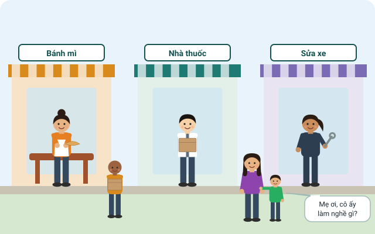
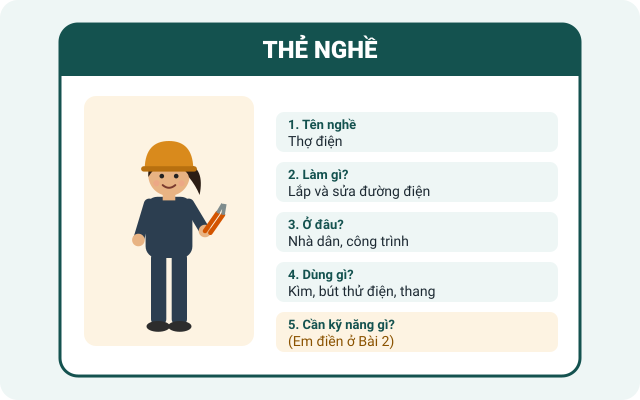

K7 · Tự học và phát triển nghề nghiệp › Bậc 1 Làm quen
Nghề nghiệp quanh em
Dành cho người lớn. Bạn đọc to từng phần. Trẻ trả lời bằng lời hoặc bằng hình vẽ, không cần tự dùng máy.
- Chuẩn bị: giấy A4 hoặc mẫu Thẻ nghề in sẵn, bút màu, một phong bì để giữ thẻ.
- Trẻ lớp 1–3: bạn ghi thay, trẻ vẽ hình. Trẻ lớn hơn: trẻ tự viết.
- Đây là bài khám phá, không phải chọn nghề. Hãy khen sự tò mò. Tránh hỏi dồn "Lớn lên con làm nghề gì?".
1. Mục tiêu
- Kể tên ít nhất 5 nghề quanh em và nói mỗi nghề làm việc gì.
- Điền 4 ô đầu của một Thẻ nghề.
2. Khởi động truy xuất
Đây là bài đầu tiên của khóa. Em hãy nhớ lại ngày hôm qua.
- Từ sáng đến tối hôm qua, em đã gặp những ai đang làm việc?
- Ai đã giúp em có bữa sáng, hoặc giúp em đến trường?
Gợi ý trả lời
Không có đáp án duy nhất. Ví dụ: cô bán xôi, bác bảo vệ, chú lái xe buýt, cô giáo, cô cấp dưỡng. Mỗi người đang làm một nghề.
3. Giải thích
Nghề là công việc một người làm thường xuyên để giúp người khác và được trả công. Quanh em có rất nhiều nghề. Có nghề em gặp mỗi ngày, như bán hàng hay dạy học. Có nghề em ít thấy, như thợ sửa điện làm việc lúc đêm khuya.

Đi săn nghề. Cách học nghề vui nhất là quan sát. Khi ra đường, em làm "thợ săn nghề" theo 4 bước:
Đi săn nghề 4 bước
- NhìnAi đang làm việc quanh em?
- ĐoánHọ đang làm gì? Tay họ cầm gì?
- HỏiChưa chắc thì hỏi người lớn đi cùng.
- GhiGhi vào Thẻ nghề khi về nhà.
Thẻ nghề là tấm thẻ nhỏ em dùng suốt khóa học. Mỗi thẻ có 5 ô: tên nghề, làm gì, ở đâu, dùng gì, cần kỹ năng gì. Hôm nay em điền 4 ô đầu. Ô thứ 5 em sẽ điền ở Bài 2.
Một nghề có nhiều việc nhỏ. Cô bán bánh mì không chỉ đưa bánh cho khách. Cô còn nhập bánh, làm nhân, tính tiền và dọn quầy. Khi điền ô "Làm gì?", em hãy kể ít nhất 2 việc nhỏ.
4. Ví dụ tại nơi làm việc Việt Nam
Tình huống giả định. Sáng Chủ nhật, bé An (lớp 2) đi chợ cùng mẹ. Hai mẹ con chơi trò "săn nghề" trên con phố gần chợ.

An chỉ vào tiệm sửa xe và hỏi: "Mẹ ơi, cô ấy làm nghề gì?"
Mẹ không nói ngay. Mẹ hỏi lại: "Con nhìn xem, cô đang cầm gì?"
An nhìn kỹ rồi reo lên: "Cô cầm cờ lê. Cô sửa xe máy!"
Về nhà, hai mẹ con làm Thẻ nghề:
| Ô | An điền |
|---|---|
| 1. Tên nghề | Thợ sửa xe máy |
| 2. Làm gì? | Sửa xe hỏng, vá lốp, thay dầu |
| 3. Ở đâu? | Tiệm sửa xe ven đường |
| 4. Dùng gì? | Cờ lê, máy bơm hơi, tua vít |
Vì sao cách này tốt: mẹ không đưa đáp án ngay. Mẹ hỏi để An tự quan sát. Điều An tự tìm ra thường nhớ lâu hơn điều chỉ được nghe kể.
5. Thực hành
Chọn một nghề em gặp trong tuần này. Làm một Thẻ nghề và điền 4 ô đầu.

Gợi ý 1
Chọn người em gặp hằng ngày: bác bảo vệ, cô lao công, cô giáo, chú bán rau.
Gợi ý 2
Ô "Dùng gì?": nhìn tay họ cầm gì. Nhìn quanh chỗ họ làm có máy móc, đồ dùng gì.
Lời giải mẫu
| Ô | Ví dụ |
|---|---|
| 1. Tên nghề | Bảo vệ trường học |
| 2. Làm gì? | Mở cổng, trông xe, giữ an toàn cho trường |
| 3. Ở đâu? | Cổng trường, phòng bảo vệ |
| 4. Dùng gì? | Sổ ghi chép, đèn pin, điện thoại |
(Ví dụ minh họa. Thẻ của em có thể khác.)
Thẻ nghề có 5 ô
6. Tự kiểm tra
Chọn đáp án. Mỗi lựa chọn đều có giải thích.
Câu 1. Bé Na thấy một cô cầm kéo và lược, đang cắt tóc cho khách. Câu nào hợp với ô "Dùng gì?" trên Thẻ nghề?
-
Đúng. Đúng. Ô "Dùng gì?" ghi đồ dùng và máy móc của nghề.
-
Chưa đúng. Đây là việc cô làm, hợp với ô "Làm gì?".
-
Chưa đúng. Đây là nơi làm việc, hợp với ô "Ở đâu?".
Câu 2. Cô bán bánh mì làm những việc gì?
-
Chưa đúng. Đó mới là một việc. Một nghề có nhiều việc nhỏ bên trong.
-
Đúng. Đúng. Kể được nhiều việc nhỏ giúp em hiểu nghề rõ hơn.
-
Chưa đúng. Người bán hàng có nhiều việc phải làm trước và sau khi bán.
Câu 3. Khi đi săn nghề, em chưa biết một người làm nghề gì. Em nên làm gì?
-
Chưa đúng. Đoán là tốt, nhưng cần kiểm tra lại trước khi ghi.
-
Đúng. Đúng. Đó là bước Nhìn, Đoán, Hỏi trước khi Ghi.
-
Chưa đúng. Nghề lạ là cơ hội để em biết thêm một nghề mới.
Câu 4. Ô nào của Thẻ nghề em sẽ điền ở Bài 2?
-
Chưa đúng. Ô này em điền ngay ở Bài 1.
-
Chưa đúng. Ô này em điền ngay ở Bài 1.
-
Đúng. Đúng. Bài 2 giúp em tìm kỹ năng mà một nghề cần.
7. Phản tư
Người lớn hỏi, em trả lời bằng lời. Phần này chỉ để trò chuyện, site không lưu gì.
- Hôm nay em phát hiện nghề nào mà trước đây em chưa để ý?
- Hãy kể 3 việc nhỏ của một nghề em biết.
8. Áp dụng thật
Trong 7 ngày tới, mỗi lần ra ngoài, em "săn" thêm nghề. Mục tiêu: có 3 Thẻ nghề. Giữ các thẻ trong một phong bì. Đến Bài 7, em sẽ trưng bày chúng.
Nối kiến thức. Thẻ nghề là sợi chỉ nối cả khóa. Bài 2 điền ô 5. Bài 6 phỏng vấn để thẻ chính xác hơn. Bài 7 trưng bày tất cả. Xem bản đồ khóa và kỹ năng K7 Tự học và phát triển nghề nghiệp.
Sự tò mò như một thói quen tốt được bàn ở daynentang.com.
9. Siêu dữ liệu
| skill | K7 · Tự học và phát triển nghề nghiệp |
|---|---|
| level | Bậc 1 · Làm quen |
| group | N1 |
| framework_map | WEF: Curiosity and lifelong learning; CSfW: 1a Manage career and work life; NACE: Career and Self-Development; LifeComp: L3 Managing learning (chỉ dẫn chiếu) |
| updated | 2026-11-14 |
Hoàn thành bài
Đánh dấu đã học để site gợi ý lịch ôn sau 1, 3 và 7 ngày. Dữ liệu chỉ lưu trên máy của bạn.
Lịch ôn gợi ý: